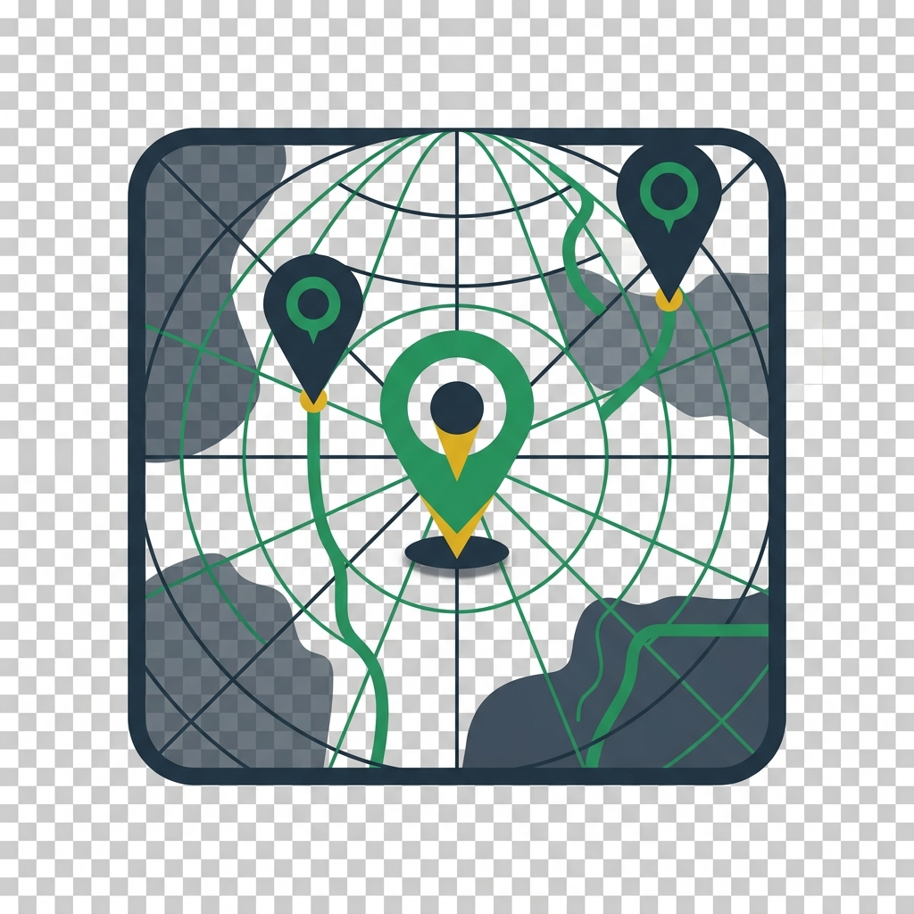
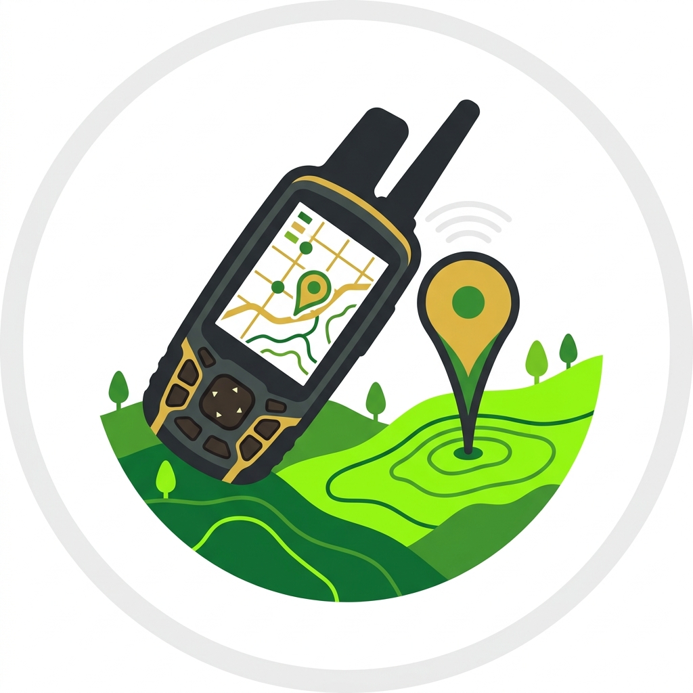
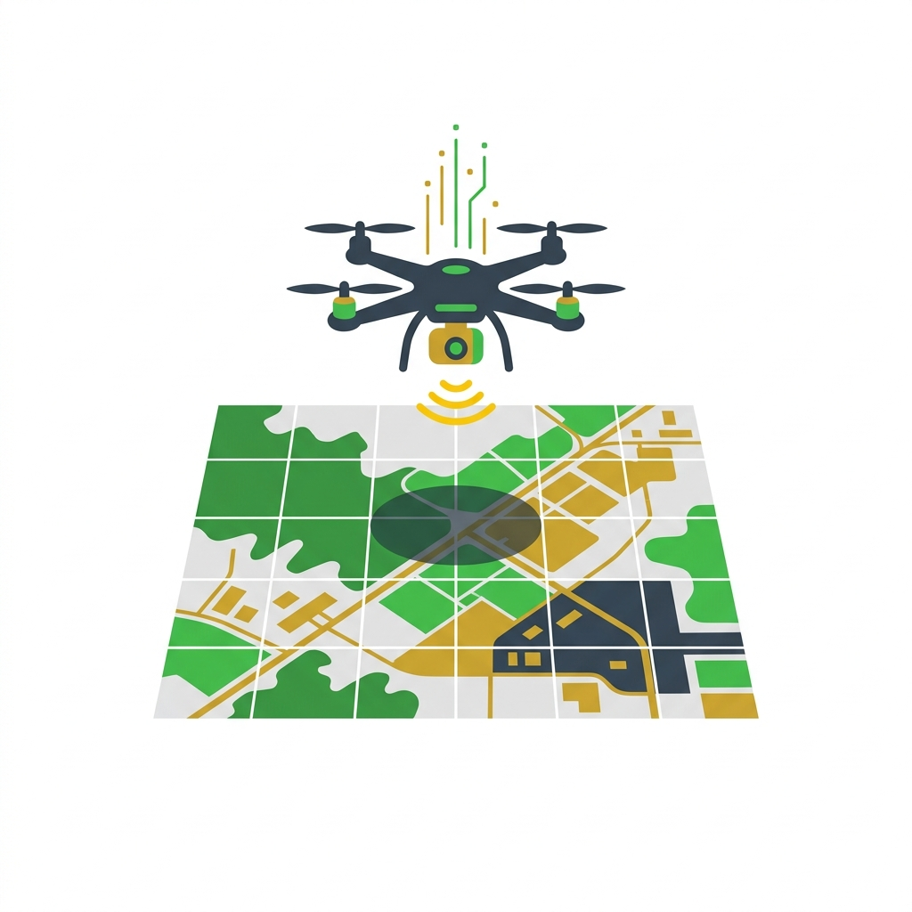

Advanced GIS, drone mapping, and flood risk analysis for West Africa. We help NGOs, governments, and developers make data-driven decisions.
Comprehensive geospatial services tailored for planning, research, and resilience.

Professional land cover mapping, satellite image analysis, flood risk modelling, and GIS database development for environmental and planning projects.
End-to-end spatial data analysis for academic theses, research projects, and publications — including R, SPSS, geostatistics, and map design.

GPS ground truthing, KoboToolbox survey design, participatory community mapping, and project monitoring & evaluation in the field.

Professional UAV flights for orthomosaics, elevation models, agricultural monitoring, and high-resolution infrastructure mapping.
Hands-on training workshops in GIS, remote sensing, QGIS, ArcGIS, drone mapping, and spatial data collection for teams and individuals.
Projects Delivered
Districts Served
ESRI Certifications
Trusted by organizations across West Africa to deliver reliable geospatial insights.